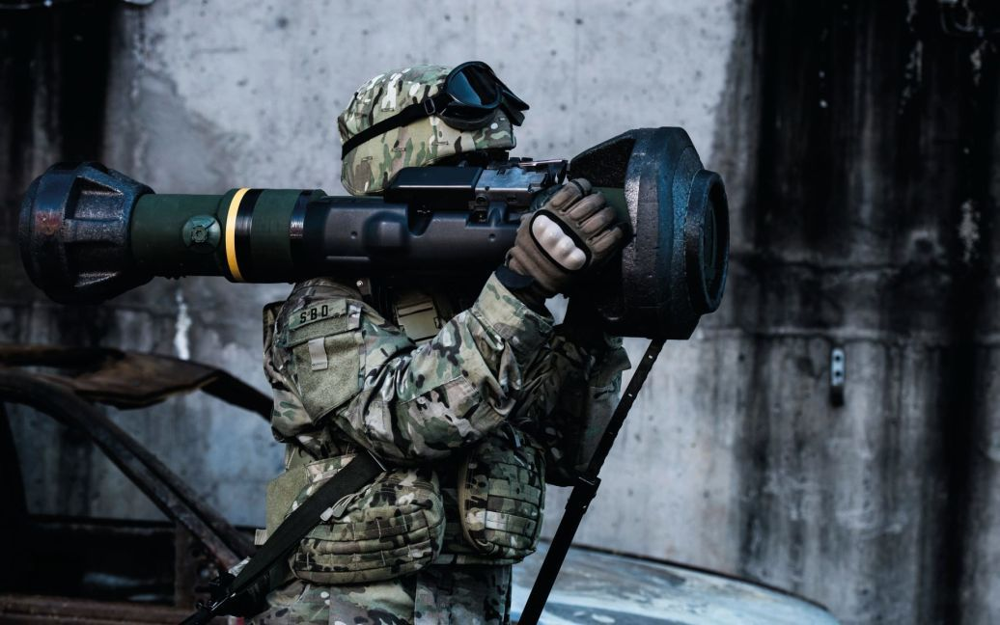

Зброя та боєприпаси: протитанкові засоби
Загальне
Протитанкова зброя — зброя або споруди для враження танків, САУ, броньованої і неброньованої техніки, а також живої сили в оборонних спорудженнях різного типу. До протитанкової зброї відноситься протитанкові рушниці, гранатомети, гранати, міни, бомби, самохідні артилерійські установки, протитанкові керовані ракети, вертольоти, фортифікаційні споруди та загородження тощо.
Види
JAVELIN
Javelin — це переносний протитанковий ракетний комплекс (ПТРК) виробництва американських підприємств Raytheon та Lockheed Martin. Перший серійний ПТРК третього покоління, обладнаний прицілом "вистрілив-забув". Ракета має теплову голівку самонаведення, тому оператор ракетного комплексу не має супроводжувати і коригувати політ ракети після запуску, поки вона наближається до цілі.Від 30 квітня 2018 року перші комплекти стали надходити до України, успішно використовуються проти російської військової техніки від 24 лютого 2022 року.

NLAW
NLAW (Next Generation Light Anti-tank Weapon) - це шведська переносна протитанкова керована ракета. Вона була розроблена шведською компанією Saab Bofors Dynamics, проте серійне виробництво налагоджено у Великій Британії від 2009 року. У січні 2022 року Велика Британія надала понад 1000 переносних протитанкових ракет Україні.
СТУПНА-П
Переносний протитанковий ракетний комплекс призначений для знищення всіх видів сучасної бронетехніки, з усіма різновидами броні: з рознесеною бронею, з динамічним захистом. Ракети, які поставляються на озброєння – тандемно-кумулятивні: перший заряд пробиває динамічний захист, а другий заряд пробиває вже броню, тобто звільняє собі прохід
КОРСАР
Мобільний «Корсар» – альтернатива важковаговій «Стугні». Мінімальна висота, мінімальна помітність і найважливіше – ви бачили наскільки легко він переноситься. Тобто одна людина з триногою, з тубусом і апаратурою управління спокійно може здійснювати пуск

ФАГОТ
Радянського протитанковий комплексу – «Фагот». Саме ці екземпляри – основа протитанкового щита ЗСУ на Донбасі. Ракета наводиться і сигнал йде по дроту. Бувають такі випадки, що чіпляється дріт за щось, наприклад, за гілку дерева і ракета стає некерована. Може вгору полетіти, може повернутись назад. Час «Фагота» давно минув, кажуть бійці. Те, що колись було ефективним, зараз – час списувати.